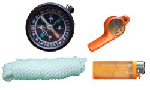

Bike Helmet
Silver color, large ize, and is light on my head. I get criticized a lot for not wearing helmet while biking,
figured this way I'll play it safe and wear one.Weight :297g

Head Wrap
New head band from BUFF, I can cover my head with it most of the time, it will block sunlight, decrease temperature, and keep myself cool～
and when there is a sand storm, I can use it to cover my face, just like a bank robber. XD
Sunglasses
720 Armour
Model : T209 UV : 400
Three different lens sets: Yellow, enhance, clear
Sunglasses
720 Armour
Model: T337 UV : 400
Three lens sets: Grey/silver, black, enhance.
Gloves
Louis Garneau XR GEL Silcon Gloves
Short gloves that's made with Silicon, makes me look even cooler XD. A pair of black ones, and a pair of red ones.
For long distance travel, my hands won't be as sore, and I can also use it to wipe sweat off my face.
Waist Bag
There are some important things that has to stay with me all the time, such as passport. Rather than hide it deep in my luggage, I'd rather just have it by me.
Also contains daily allowance, candy and other things, mostly things that I'll need that day.

Sweater
Salewa Power Stretch
Material: Polartec Color: Gray
I also have two other thicker ones, in light brown color; it's a special edition for a couple of my favorite advanturers.

Wind breaker
Heritage Gore Windstopper
Blue color, wind resistant, water-proof, light-weight and comfortable. Brother Hu gave it to me as a gift. Weight:280g。

Jacket
Epic Jacket
Water-proof jacket is made by MHW basic requirement is water-proof and breathable. Weight:380g。
Water-proof pants
Cloudveil Zorro Pant
Made by Clouddevil. Black colored. Weight:241g。

Shorts
I don't really like to wear biking shorts, the relaxed style fits me better.
Pear Lizumi. Dark grey color. The length goes down to my knees, and is very comfortable to wear. :D
Shoes
Zamberlan 165 SEDONA LOW XCR
Decided not to wear cycling shoes this time, even though it's more relaxing during the bike ride, but after a while the feet gets really sore /_\
Got a nice pair of breathable shoes, and my feet won't stink after a long ride!
Blue and White flipflop
With a pair of blue and white flip lops, there is no place I can't go. It's an essential and can easily be acquired in marekts.
It's also a token of Taiwan, the entire thing is made with PU sponge, which makes it very soft.

Cycling socks
FoxRiver Breathable Socks
Breathable and comfortable socks, I got two pairs so I can alternate between them.

Tent
Mountain Hardwear Ethereal Bivy
Uses Gore-Tex XCR material, Weight:790g。
Use it with sleeping bag and sleeping pad, it becomes a very warm place to sleepin a cold night.

Sleeping bag
Jie-Fong
Goose down sleeping bag, suitable for even -20 degree temperature. I can expand it all the way to make it into a comforter.
My friend Aluba gave it to me as a gift at 2005 when I did my France tour.
Sleeping pad
Dream Mema
I can use it to isolate from cold temperature even if I sleep on snow. Weights 840g.
Also a gift from Aluba two years ago.

Gas Stove
Coleman Exponent
Modle: 422 Weight: 680g. Uses both gasoline and propane.

Cooking pot
A&F country
Made entirely with aluminum, which made it very light, but also expensive. ~_~
It can hold about one liter of water, allows me to boil some water or make hot cocoa.

Knife
A folding knife that's pretty and fits well in my hand.
When it's folded in, it has a design to allow you to cut ropes. Material: AUS 8 Weight: 102g

Taiwan flag + BTP flag
I had to bring Taiwanese flag with me, and will be displaying it depending on the situation. It's from a friend whom I met from military.
Also bring BTP flag with me, to raise awareness of environment protection.
Pen, notebook
Two notebooks, each with 65 pages. One black and one white. Also have several pens.
I carried a lot of pens, and I can give them as presents in some isolated areas.

Whistle, rope, lighter, compass
You don't always know when you'll use those things, or will never will it.
But just in case, it's better to bring them.
LED flash light
LED multi-use flash light. I can use it to flash, extreme bright flash, SOS signal, etc.
Comes with a strap so I can place it on my chest, or on the bike, or on the helmet.

Extension cord & Converter
comes with the laptop is a converter for plug-ins, and also an extension cord.
Personal Hygiene
Face cloth, soap, tooth brush, tooth paste, cotton swab, tooth floss, nail clipper, mirror
Just a random image to get the idea crossed, I can't find pretty things like this ~_~

Medicine
Cold medicine, antibody, eye drops, bandaids, cough drops, face mask,
chapstick, spray-on sun screen, vitamins, etc. Thanks to my friend min-long who gathered it for me.
Passport, visa, photo, documents
Taiwanese password, Taiwanese ID for China, mug shot, emergency contact info
Kazakhstan visa, Russian visa, Poland visa, EU visa. And a copy of all that.
Renminbi, credit card, debit card
I only carried Renminbi, and use it with credit card and debit card
Traveler's checks are annoying, and I am debating whether to carry them or not ~_~

Travel Insurance
ING life insurance 20 million OTA + OHS + MR
A very well-known insurance, and covers a lot - low deductible, longer duration (180 days)
and include oversea medical and emergency support. Having insurance is also helpful in acquring visa.
Vaccination
My blood now has a bunch of vaccines from MacKay Memorial Hospital, including：
Rabies, Hepatitus A, meningococcal meningitis

Books
Carried some books with me during the trip, even though it's heavy, but has been very useful.
Alone in a foreign land, I can always switch my mood by reading a book I like.
The book I carried this time is "Cien años de soledad", I read it once four years ago, and it's a very good book!
Map
I got a map for mainland China, contains 160 pages, includes large maps with scales, and also maps for major cities.
Besides map, it also has very detailed informatation on the geography, weather, tour area, etc.

Dried food
Got stove and cooking pot, what should I make?
Basically I got instant noodles and Milo's hot chocolate.
Just boil some water and I'll have some food to eat and something to drink. I can also buy other food along the way.
Peace Charm
My aunt went to temples, and got the charm for me. :)
I will return safely.

Heart
Even though it has hardened, but
with heart, everyone can do anything.......